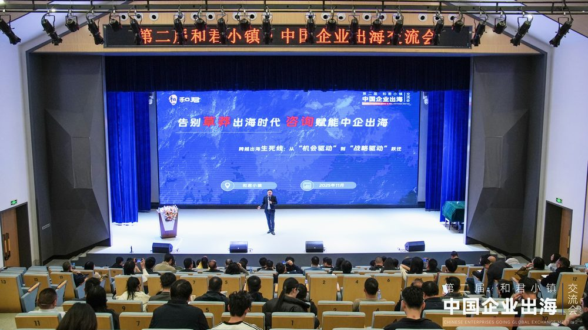
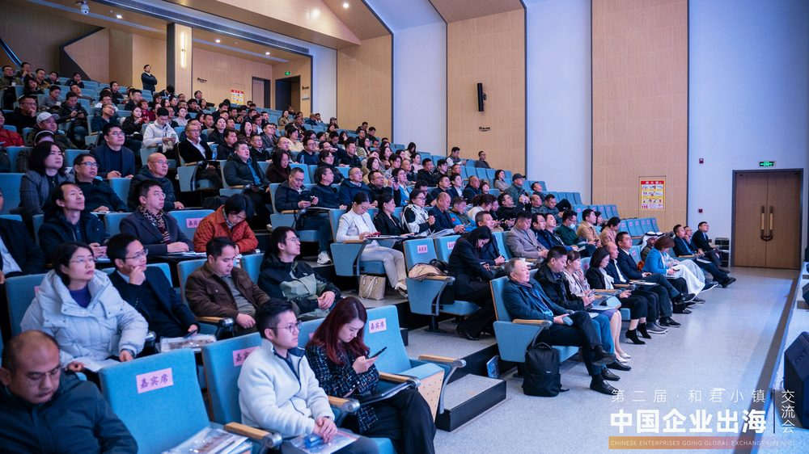
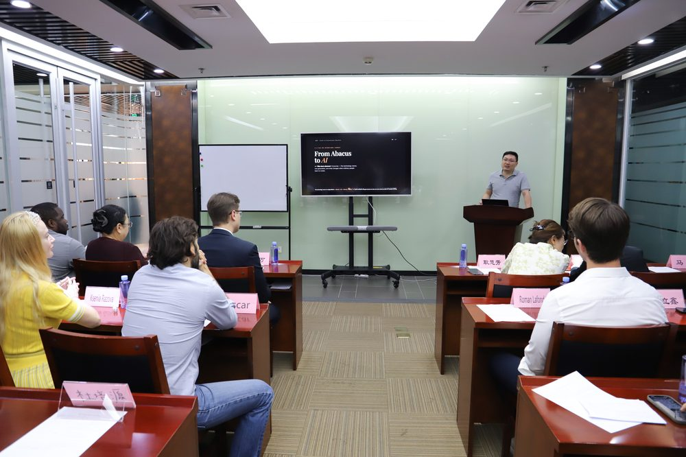
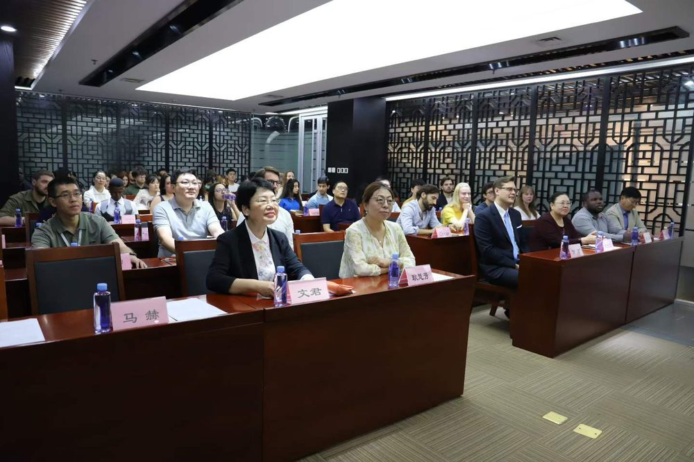
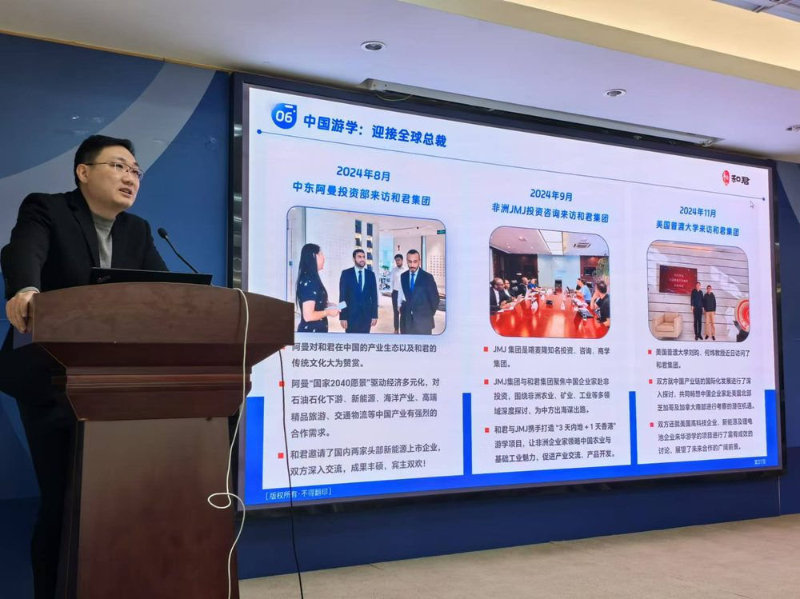
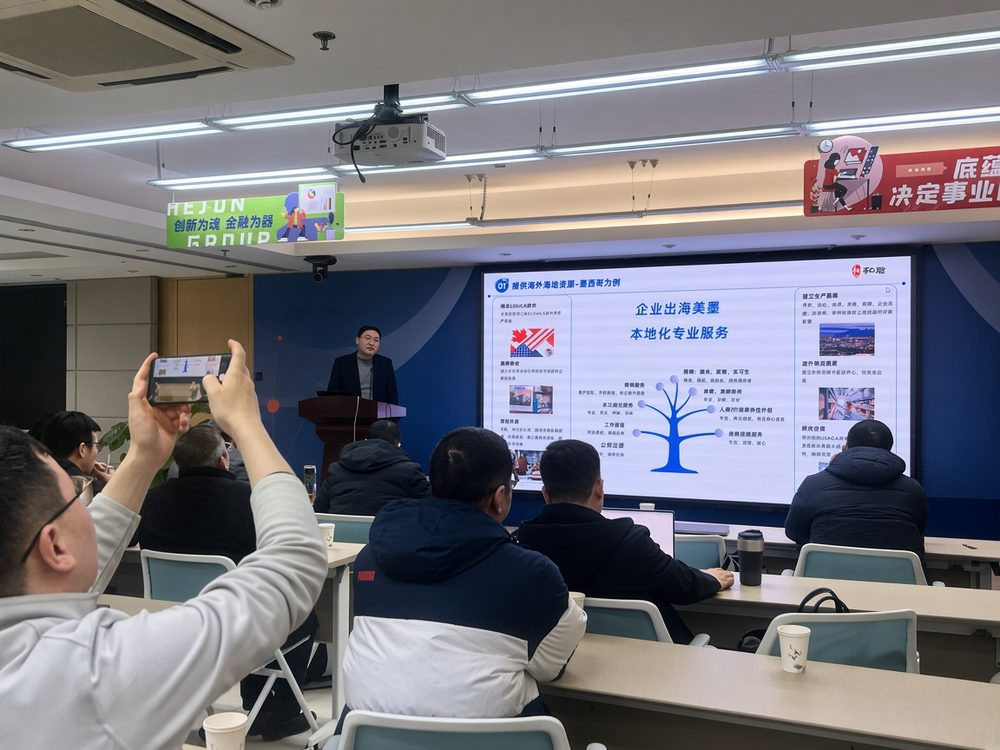
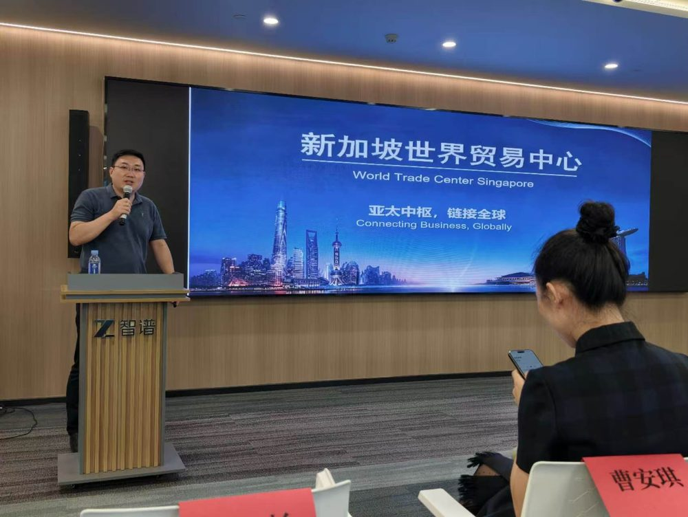
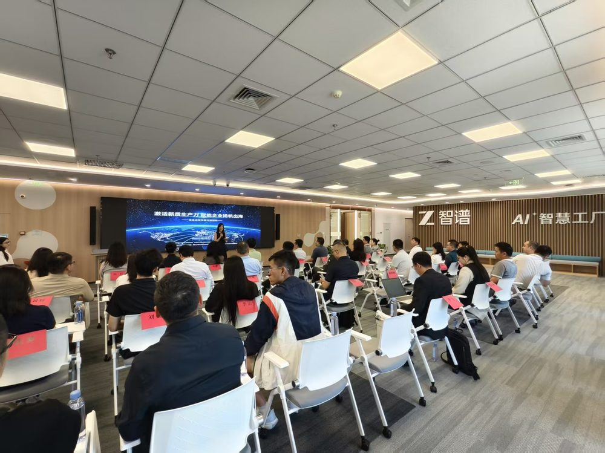

World Trade Centers Association（世界贸易中心协会）联合国授予会员日的国际组织成员
World Trade Center Singapore（国际组织）Shareholder, Secretary-General & Chief Operating Officer
ROTO FRANK AG（德国总部跨国企业）General Manager
对外经济贸易大学（国际学院）校外导师
海鑫汇 Gateway To New（GTN）创始人兼 CEO
职业履历
北京化工大学高分子材料学院（碳纤维方向）学士，对外经贸大学政府管理学院（前海关系）硕士。
2008年毕业后，加入德国跨国企业 ROTO FRANK AG，长期从事亚太市场业务与企业经营管理，后担任 General Manager，积累了跨文化经营、市场拓展与企业本地化运营经验。
2023年之前，先后任职于纳斯达克及纽约证券交易所上市公司、咨询投资集团。参与中国企业战略规划、产业研究与全球化项目，服务领域涵盖人工智能商业应用、先进制造、新能源、智能装备及数字科技。参与博彦科技（002649）全球化人才战略、王力安防（605268）品牌国际化、安硕信息（300380）数字化增长战略等项目，以及京东自营数字化运营、贝壳找房产业数字化转型实践。
2024年创立 Gateway To New（海鑫汇），以新加坡为枢纽，长期观察并参与中国成长型、专精特新及科技创新企业的全球化实践，涉及欧洲、南亚、东南亚及非洲等市场。具体项目见第三页。
2024年加入世界贸易中心协会（WTCA）新加坡成员机构 WTC Singapore，现任股东、秘书长兼首席运营官。推动其围绕 WTC ONE Club 国际商务俱乐部、GlobalX 企业全球化加速平台及 WTC FUND 国际投资基金，连接企业、资本、产业与创新资源。依托 WTCA 覆盖近100个国家和地区、300多个世界贸易中心的全球网络，推动中国与新加坡、东盟及其他市场的企业交流、产业协作与投资合作。
核心定位：企业全球化战略专家｜国际商业合作推动者｜跨国企业经营管理者
授课花絮








主讲课程
核心课程
企业全球化战略与落地
01
该不该出海
全球化决策
AI 时代的决策
02
出海选哪里
数据与市场选择
AI 市场研究
03
出海怎么走
路径与风险防控
AI 风控
04
出海怎么落地
首批客户
AI 获客
05
出海怎么站稳
团队与经营
AI 协同
行业专题
制造企业出海
供应链与交付
AI 供应链
出海生命周期：01 → 05
基础课程 · 能力基座
跨国企业
经营管理实战
互联网平台
运营与商业
产业数字化
与技术商业化
国际商业网络
与跨境合作
近 20 年全球商业与企业经营实践 · WTCA / WTC Singapore / ROTO FRANK AG · 参与京东、贝壳数字化项目
适用对象：企业 · 园区 · 政府（均为组织企业参加）
《该不该出海：AI 时代企业家的全球化决策》 听完带走：出海诊断表 《出海选哪里：用数据与 AI 选对第一个市场》 听完带走：五维打分表 《出海怎么走：路径选择与 AI 风控》 听完带走：三问决策树、六项风险排查矩阵 《出海怎么落地：用 AI 找到并服务第一批海外客户》 听完带走：三阶段通过标准 《出海怎么站稳：跨境合作、团队与国际化经营》 听完带走：合作伙伴与团队评估表 《制造企业出海：AI 供应链数字化与全球交付》 听完带走：供应链数字化成熟度表
授课形式： 企业高管专题培训、企业定制内训、主题演讲、高管研修、案例研讨与战略工作坊。